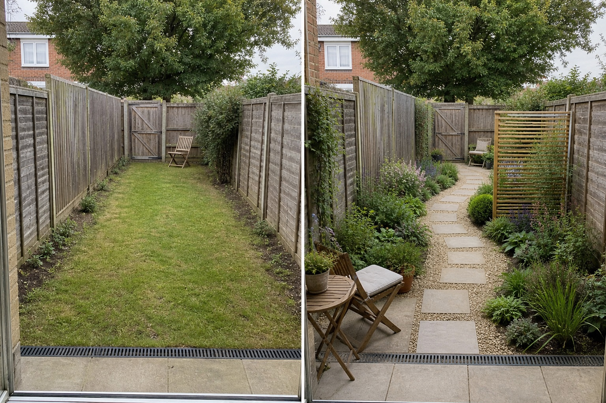

Offset the route, not the access
The path shifts gently across the view instead of reinforcing one central runway. It still reaches the rear gate continuously; its real width, surface, edges, and accessibility must be checked on site.
Start by protecting the route you genuinely use. Then interrupt the end-to-end view with one offset movement and give the near, middle, and far parts clear but connected roles.
Editorially reviewed August 14, 2026.
This AI-generated comparison is visual inspiration, not a measured layout, accessibility plan, drainage solution, planting specification, product recommendation, cost estimate, or construction guarantee.

The path shifts gently across the view instead of reinforcing one central runway. It still reaches the rear gate continuously; its real width, surface, edges, and accessibility must be checked on site.
A movable near-house seat supports short everyday use, while the quieter far end becomes a destination. The middle remains a transition rather than a third crowded room.
Planting projects farther into the view on alternating sides, then recedes. Repeated surface and foliage cues keep the sequence related instead of splitting it into unrelated themes.
The concept keeps the side fences, rear gate, neighboring view, mature tree, doorway, threshold, drain, and ground level. It does not move boundaries, claim more width, alter drainage falls, remove roots, or guarantee privacy. Any design must work with those facts.
Record the usable width at several points, door and gate swings, bins, storage, utilities, furniture movement, maintenance access, and the route required by everyone who uses the garden.
Observe sun, shade, wind, neighboring windows, fence condition, and the views from inside. A screen shown in a concept does not establish permission, wind stability, or privacy.
Locate drains, downpipes, low points, slopes, roots, and recurring wet areas. Do not cover an outlet or assume gravel, paving, or planting will solve runoff.
Check surface maintenance, edging, leaf collection, watering, lighting, material behavior, local rules, and plant suitability and mature size using reliable site-specific sources.
Avoid a single central runway, identical shallow borders on both sides, too many themed zones, furniture blocking the route, or a screen that hides the gate. Stop the visual exercise when the idea requires changed levels, retaining work, drainage alterations, tree or root work, fixed electrical installation, structural screens, boundary changes, or regulated access; those decisions need appropriate local assessment.
Make the eye move across the plot as well as toward the end. An offset route, a seat facing across the width, and planting that alternates in depth can interrupt one dominant sightline without pretending the boundaries changed.
Use only as many zones as support real activities. Two connected pauses with a clear transition are often easier to read and maintain than several small rooms. Keep one material or planting rhythm running through them.
Start with the practical destination and required access. Test an off-center or gently shifting route only if it remains comfortable, stable, maintainable, and clear of gates, drains, utilities, and furniture; verify all measurements on site.
Upload a level, wide photo to compare restrained directions while keeping the real gate, boundaries, drainage, and access in mind.
AI-generated visualizations are concepts. Verify measurements, site conditions, access, drainage, roots, local rules, materials, plant suitability, and professional requirements before buying or building.